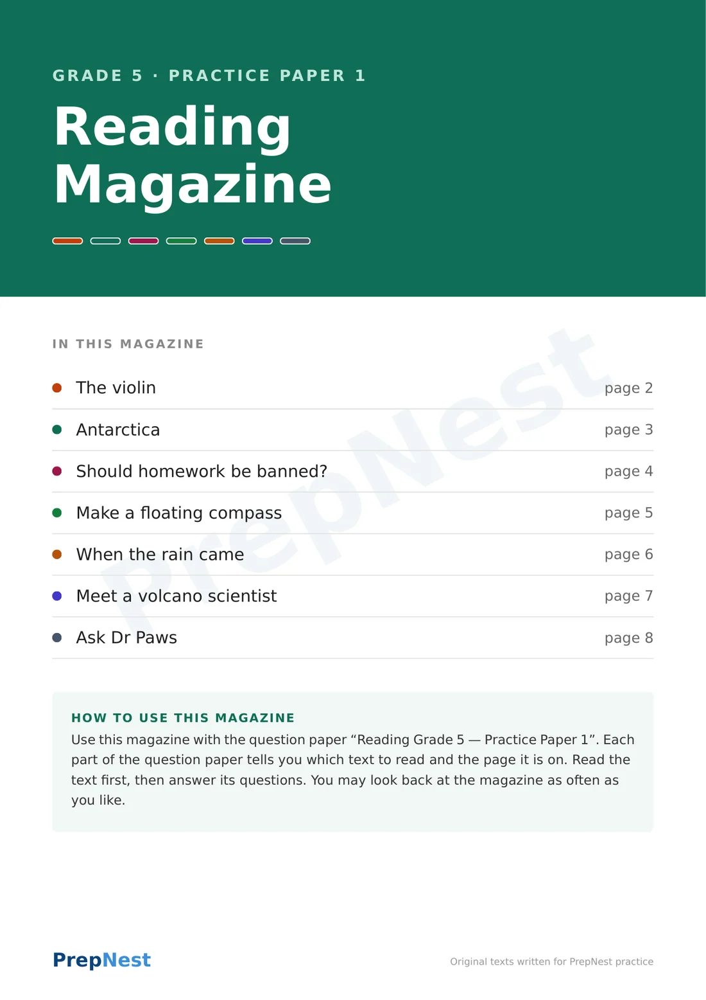
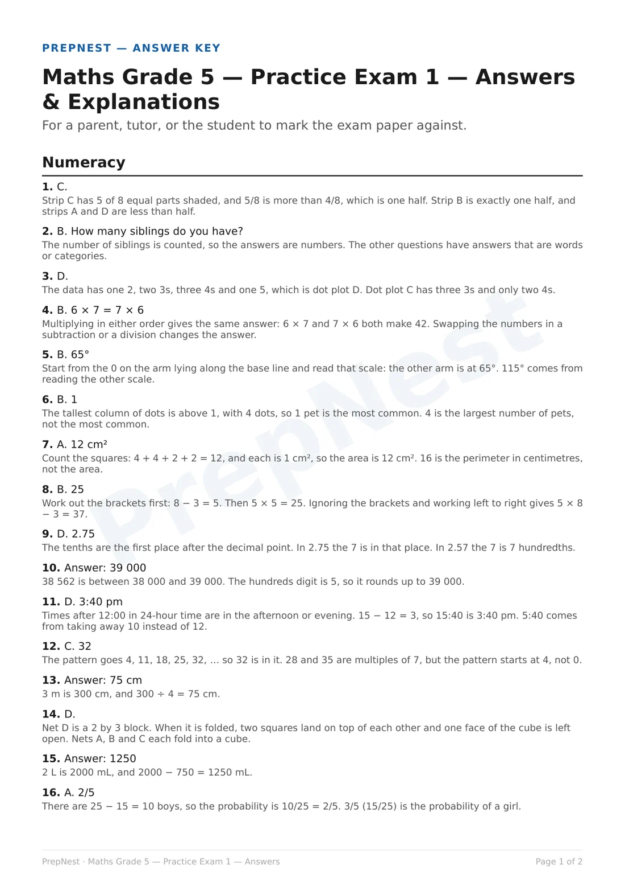
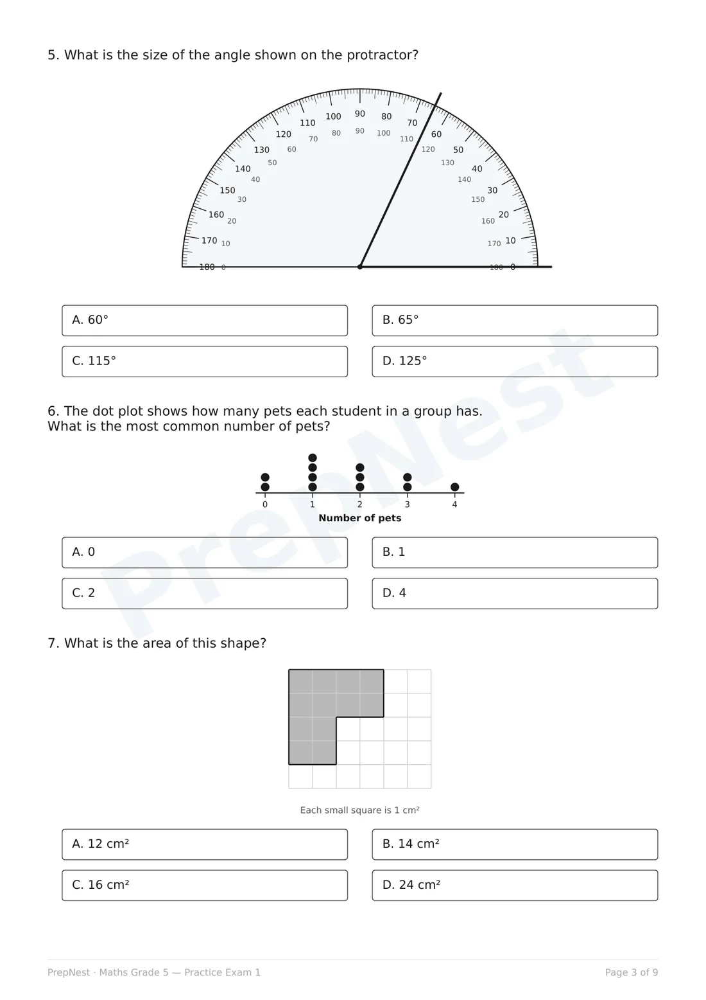
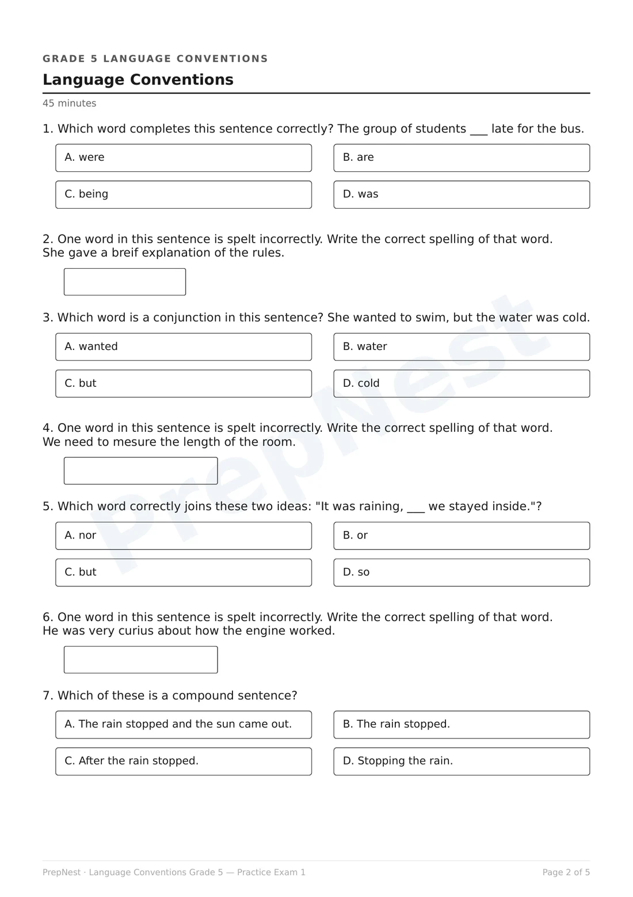
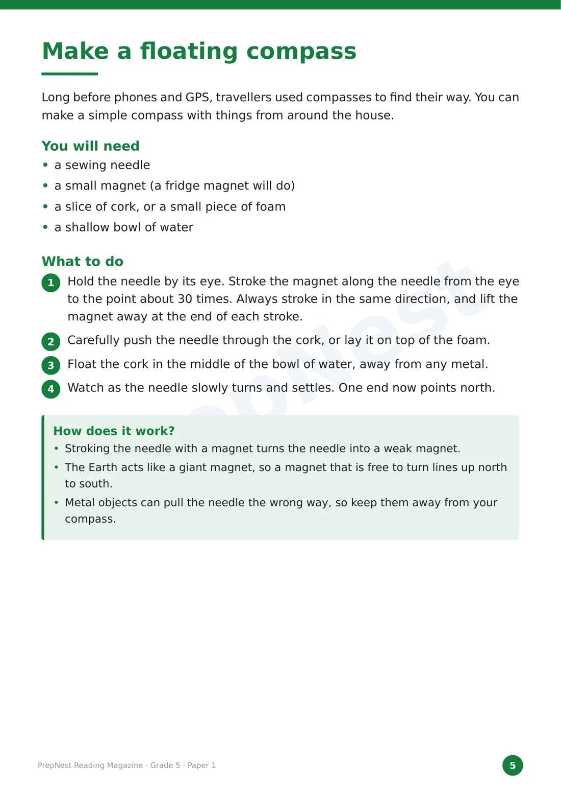
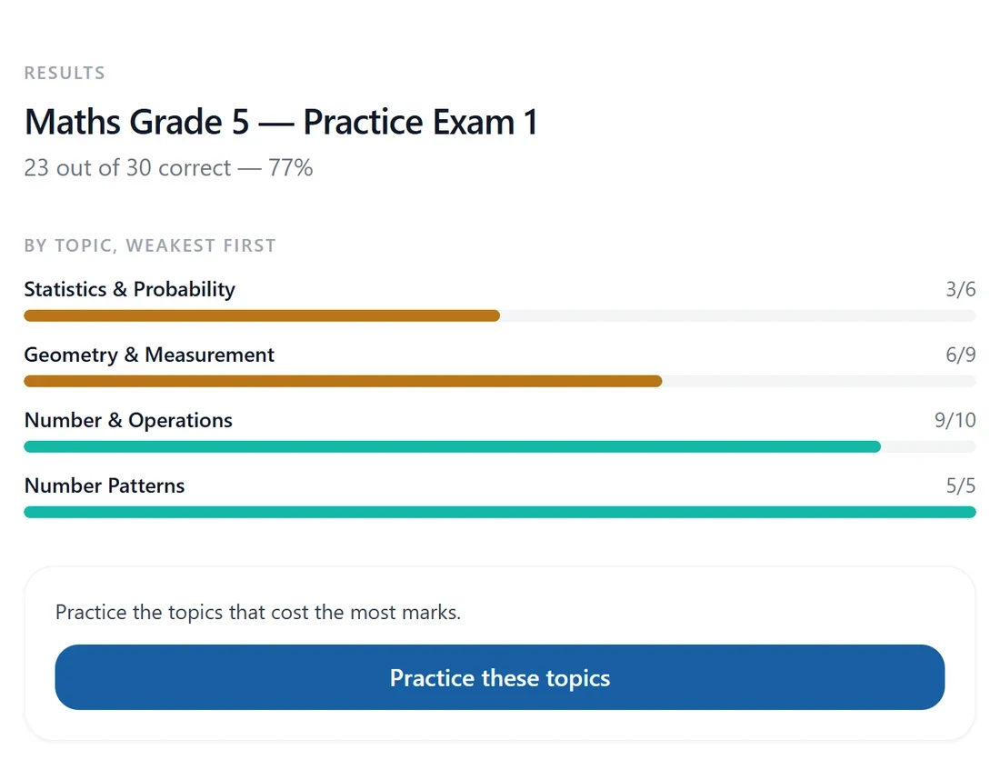
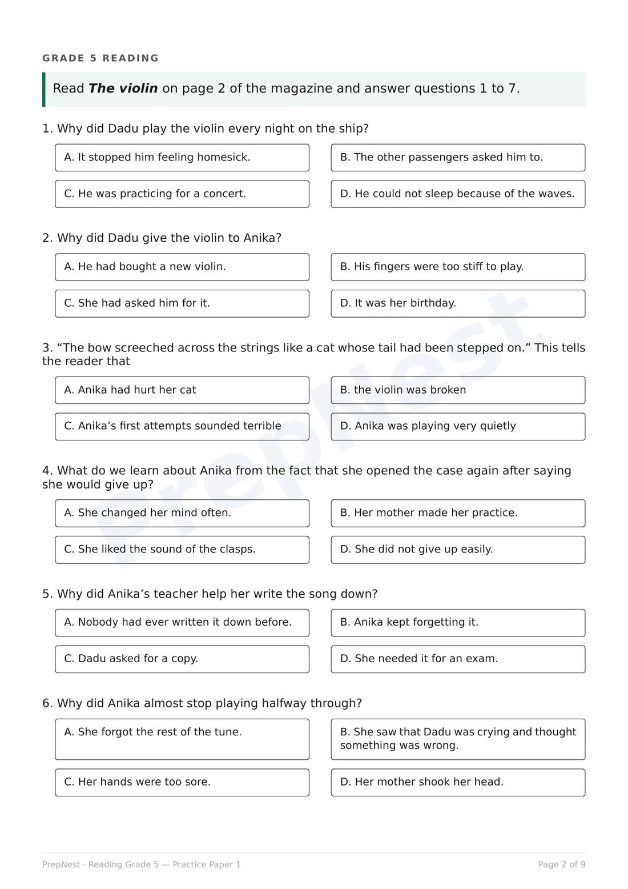
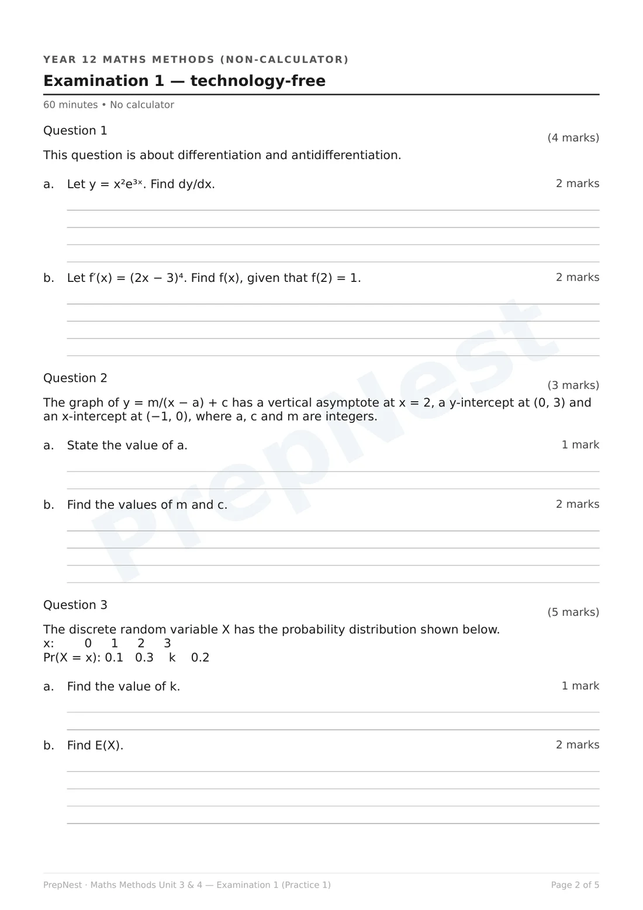
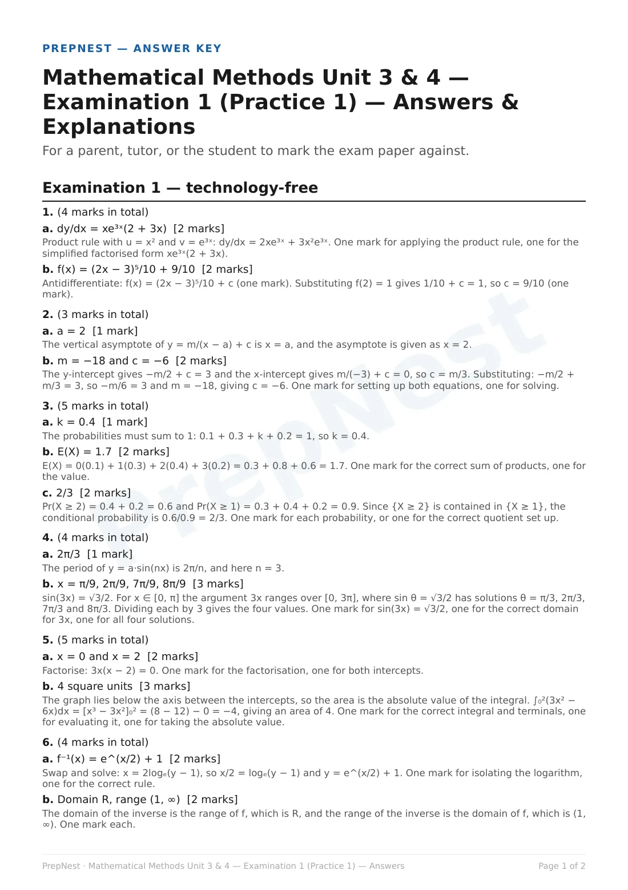

NAPLAN & VCE · Grade 3 to Year 12
Printable papers, each with an answer key that explains every answer.



NAPLAN-style Numeracy

NAPLAN-style Reading

Answer key and topic report

Every subject at every year level has one, with its answer key. No account needed to download or mark it.
Link in bio


NAPLAN & VCE · Grade 3 to Year 12
Printable papers, each with an answer key that explains every answer.
VCE Unit 3 & 4 · 2026
Sit a full Methods, Specialist, General or Physics exam this weekend.

2026 VCE exam timetable
Melbourne time, reading time included. From the VCAA 2026 VCE examination timetable. Check with your school for any changes.
Year 12 practice exams
The first practice exam in every subject is free, with its marking guide. Sit it timed this weekend, then mark it.
Link in bio
Maths and Physics exam dates